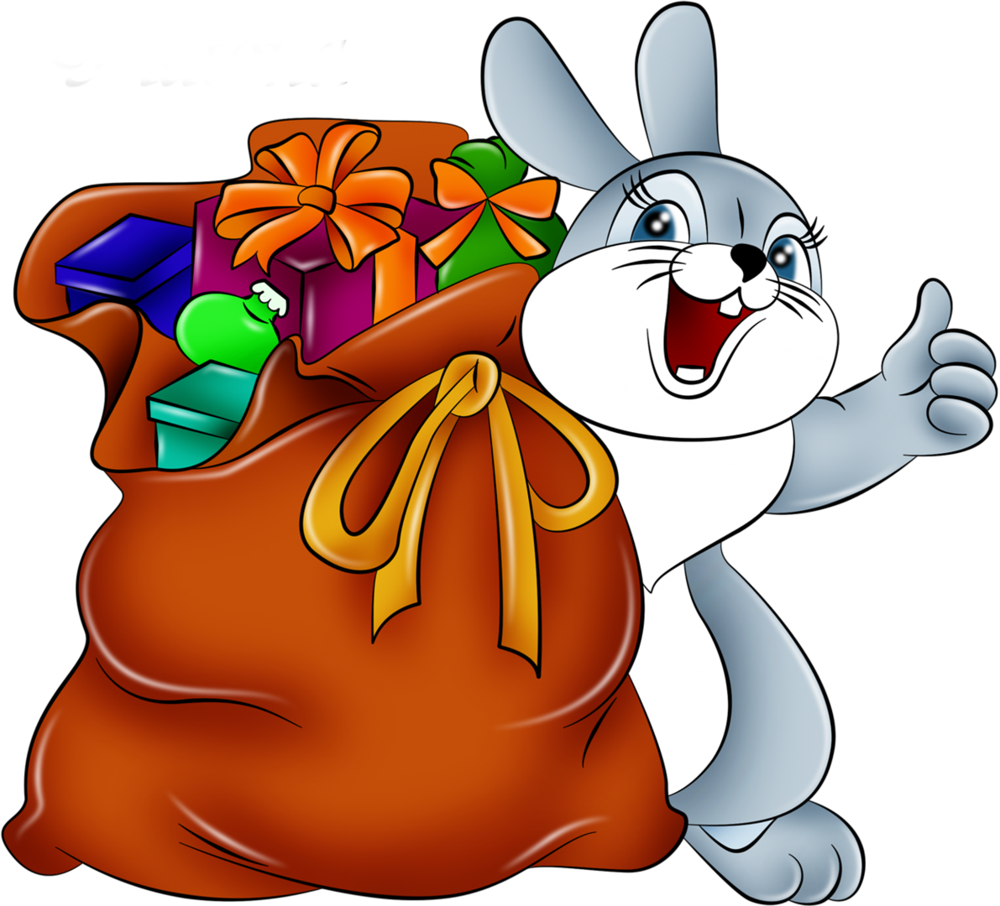

Happy
New Year
С Новым Годом! Пусть как новогодний снегопад, сыпется на вас счастье! Пусть в вашем доме всегда царят
душевный покой, уют, радость и оптимизм! И конечно, пусть все проблемы и заботы останутся в уходящем
году!
Read More

Символ года
Символом Нового 2023 года станет Черный Водяной Кролик. В новогоднюю ночь можно задобрить пушистого
зверька и привлечь его расположение. В хорошем настроении Кролик принесет радость и счастье каждому.
Год Кролика занимает четвертое место в 12-летнем цикле китайского гороскопа и считается самым
счастливым в восточном календаре.
Кролик — тихий, безобидный, чуткий зверек с покладистым характером, иногда слишком ранимый и
капризный, но в целом приятный. Он ненавидит всякий шум и возню, поэтому, пока он тут главный, лучше
не предпринимать рискованных шагов (и вообще не нарушать привычный ход дел). Представители разных
знаков относятся к этому по-разному: Тигры и Драконы будут скучать, зато Козы, Лошади и Крысы
наконец-то вздохнут с облегчением.
Ногодние поздравления
Пусть в Вашем доме будет всё -
Любовь, Покой, Уют, Богатство,
Пусть будет в нём всегда тепло,
Чтобы хотелось возвращаться!
Пусть старый год заберет все печали,
А Новый — радость принесет!
Любовь, достаток, и в делах — удачу,
А счастье само к вам в гости придет!
Пусть в этот Новый Год
Счастье в дом заглянет,
С ним удача к вам придет
И уходить не станет!
Пусть надежды тебя осыпают,
И мечты сбываются твои!
С Новым Годом тебя поздравляю,
Годом счастья, добра и любви!